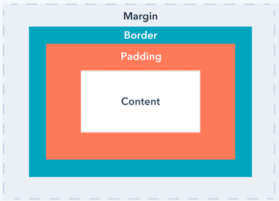

CSS Margin

Margin dalam CSS adalah properti yang digunakan untuk mengatur ruang di sekitar elemen HTML. Margin ini merupakan ruang di luar batas (border) elemen, dan tidak mempengaruhi konten atau tata letak elemen di dalamnya, melainkan jarak antara elemen tersebut dengan elemen lainnya.
Jenis Jenis Margin
- Margin Individual
- Margin Shorthand
Contoh Margin Individual
- Margin-top
- Margin-right
- Margin-bottom
- Margin-left
Contoh Margin Individual
p {
margin-top: 25px;
}
Margin Individual untuk mengatur Margin satu bagian conth di atas untuk mengatur bagian Atas
Contoh Margin Shorthand
- Margin Yang terdapat 4 nilai
- Margin Yang terdapat 3 nilai
- Margin Yang terdapat 2 nilai
- Margin Yang terdapat 1 nilai
Contoh Margin 4 Nilai
p {
margin: 25px 50px 75px 100px;
}
Margin 4 nilai untuk mengatur bagian atas -> kanan -> bawah -> kiri
Contoh Margin 3 Nilai
p {
margin: 25px 50px 75px;
}
Mrgin 3 nilai untuk mengatur bagian atas -> kanan dan kiri -> bawah
Contoh Margin 2 Nilai
p {
margin: 25px 50px;
}
Mrgin nilai untu mengatur bagian atas dan bawah -> kanan dan kiri
Contoh Margin 1 Nilai
p {
margin: 25px;
}
Mrgin 1 nilai untuk mengatur keempat margin nya dengan ukuran sama